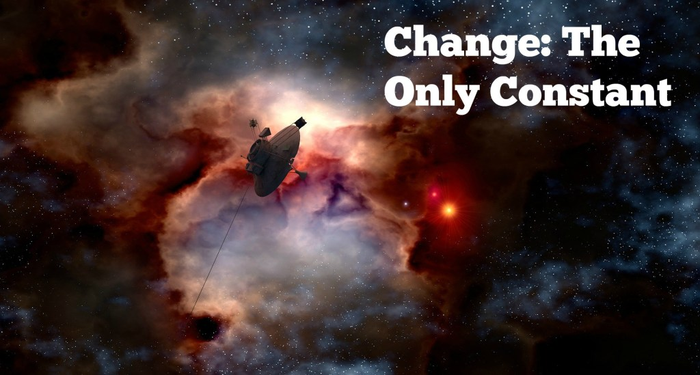

- Change is the only constant, what does that mean? So,it's gonna happen So What we can choose how do we react to it? we can be negative or else can be positive. Change brings the posibility of learning which otherwise we may just be lazy to take on embracing change gives us power, courage, self confidence you may hear people saying that it takes 10 years to change it really just takes a moment ,a second Though it may takes you 10 years to get to the point in your life where you finally say 'enough'.
- But why we resits change, one reason why change is becoming difficult as you get older is you have found the cocons of comfort there are many comfort zone you have created ,Any disturbance at that,you are disturbed now ,Now when you are young you are not looking for comfort you are looking for life ,Now you are not looking for life you are looking for comfort, safety when you are teen you had wild dreams as what we want to do with our life. By the time you become 28, we cut down all the thrills and thinks this is not practical ,All that happened is you are becoming a coward, you said i am becoming practical and cut down many things and said "If i get a job, If i earn my living, this is ok " By the time we are 35 we are thinking if i dont get any trouble thats enough, You are not lookingg forward to anything great happening, But that when you start getting into trouble. So, at this time we are not looking at life as zest we are looking at life as safety.The essence of physical existance is change isn't it? Everything is changing is there anything that's not changing , nothing is constant Even the so called static states are dynamic in nature; So if we resit change, we are resisting life. If you want an unchanging life there one beautiful place where nothing changes - that's your grave ,Either you must go to grave or you must get enlighten,but as long as you are part of the physical process of the existance you must adapt change,ther is nothing thats not changing ,See this moment you are inhaling next moment you are exhaling , if you doesn't want change you stop it , So if you resist change you are reisting the very fundamental proceess of life invariably you will invite all kinds of suffering. If you are living and you want to Be dead you will ask for trouble isn't it? when you are living you must live totally. If you want to die you must die efficiently.the moment you resist change frustration is natural once it come it develops into depression ."Frustration and depressionare devil's favourite tools for destruction "
Back to all posts

CHANGE IS THE ONLY CONSTANT
Posted by Rahul Kumar on 9 sept, 2019

About the author: Rahul Pathak is a noob developer, Blogeer. He loves doing every shit that makes him happy.